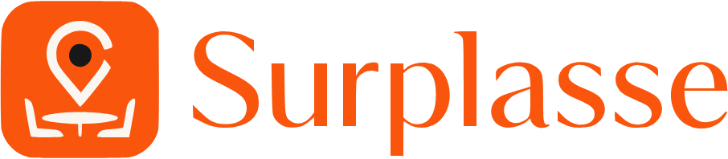
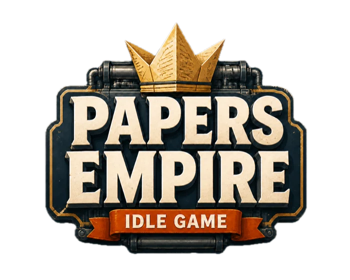
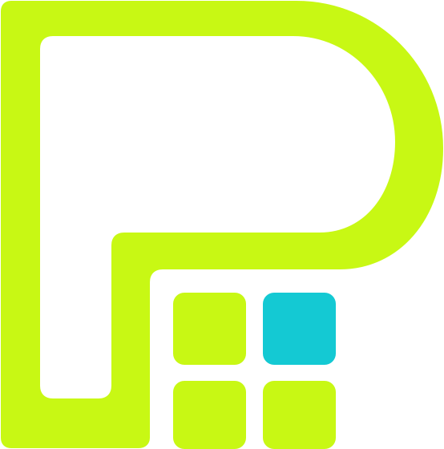

From idea to production
Projects.
Web products and engineering systems, led and verified by a human.
nicolaspieper.com/projects
01

02

03

04
05
FOUNDATION.md
From idea to production
Web products and engineering systems, led and verified by a human.
nicolaspieper.com/projects


